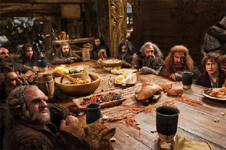

An Unexpected Party

In a hole in the ground there lived a hobbit. Not a nasty, dirty, wet hole, filled with the ends of worms and an oozy smell, nor yet a dry, bare, sandy hole with nothing in it to sit down on or to eat: it was a hobbit-hole, and that means comfort.
It had a perfectly round door like a porthole, painted green, with a shiny yellow brass knob in the exact middle. The door opened on to a tube-shaped hall like a tunnel: a very comfortable tunnel without smoke, with panelled walls, and floors tiled and carpeted, provided with polished chairs, and lots and lots of pegs for hats and coats - the hobbit was fond of visitors. The tunnel wound on and on, going fairly but not quite straight into the side of the hill - The Hill, as all the people for many miles round called it - and many little round doors opened out of it, first on one side and then on another. No going upstairs for the hobbit: bedrooms, bathrooms, cellars, pantries (lots of these), wardrobes (he had whole rooms devoted to clothes), kitchens, dining-rooms, all were on the same floor, and indeed on the same passage. The best rooms were all on the left-hand side (going in), for these were the only ones to have windows, deep-set round windows looking over his garden and meadows beyond, sloping down to the river.
This hobbit was a very well-to-do hobbit, and his name was Baggins. The Bagginses had lived in the neighbourhood of The Hill for time out of mind, and people considered them very respectable, not only because most of them were rich, but also because they never had any adventures or did anything unexpected: you could tell what a Baggins would say on any question without the bother of asking him. This is a story of how a Baggins had an adventure, found himself doing and saying things altogether unexpected. He may have lost the neighbours’ respect, but he gained-well, you will see whether he gained anything in the end.